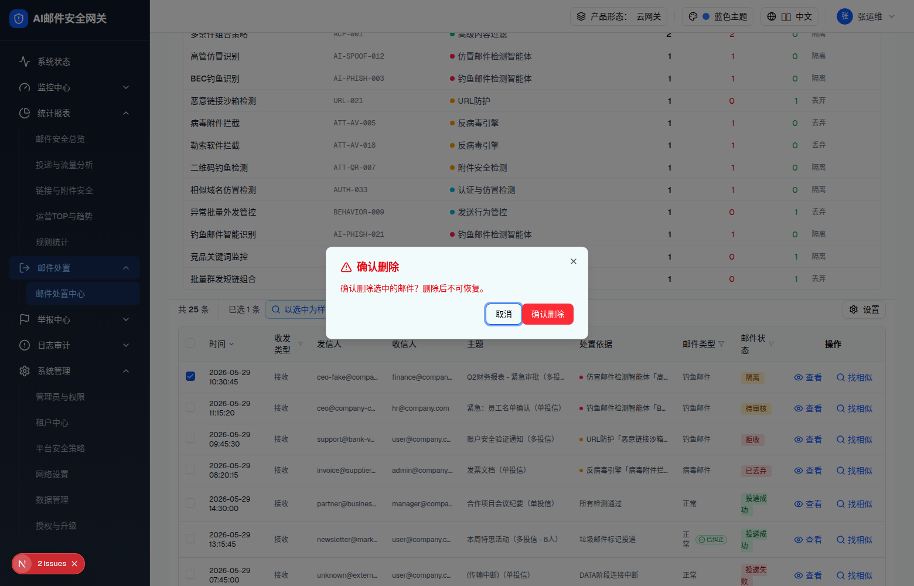

| 属性 | 值 |
|---|---|
| 所属组件 | 2.2 日志表格 InvestigationLogsTable |
| 主文件 | email-handling-disposal-center/index.html |
| 触发路径 | 批量条 → 点击「删除」（Dialog） |
| 范围说明 | 「规则命中统计」不在本规格范围（见主文件说明块） |
下方内嵌为删除对话框真实 HTML。
确认删除选中的邮件？删除后不可恢复。

| 元素 | 内容 |
|---|---|
| 标题 | AlertTriangle 红 + 「确认删除 / Confirm Delete」 |
| 描述 | 确认删除选中的邮件？删除后不可恢复。 |
| 无改判 | 删除不含改判 Select |
| 页脚 | 取消 / 确认删除（红）→ onDelete(ids) + 清空选择 |
| 比对项 | demo 实际 DOM | 嵌入的 HTML | 一致 |
|---|---|---|---|
| 对话框容器 | [role=dialog] sm:max-w-md | 一致 | ✅ |
| 无表单字段 | 无改判 Select | 一致 | ✅ |
| 红色警示文案 | 存在 | 一致 | ✅ |